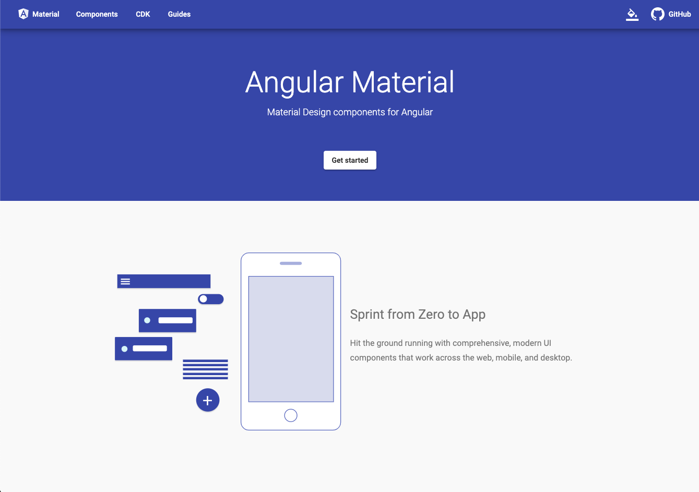

Angular Material

Presented By Nicholas Spaulding
What is Angular Material?
- Essentially, it is a library that combines Angular components with
material design styling to enhance, both the look, and the
functionality of any Angular project.
- Unlike Bootstrap
CSS Styling + Components
Popular Uses
- Styling
- - Themes
- - Responsive Layouts
- - Animation
- Components
- - Buttons
- - Inputs
- - Tables
- - So much more...
Project 4 Use
I used the Angular Material to:
- Make the Todo table
- Sort the Todo table
- Filter the Todo table
Conclusion
- If you're stuck, use Angular Material to meet project
requirements.